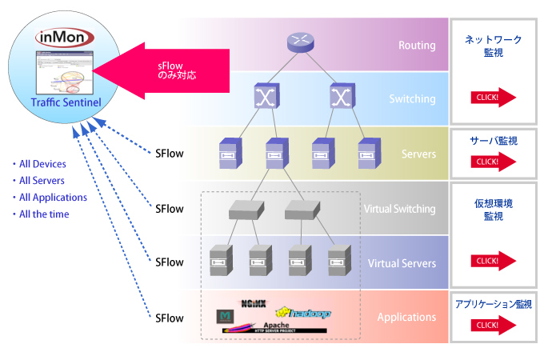
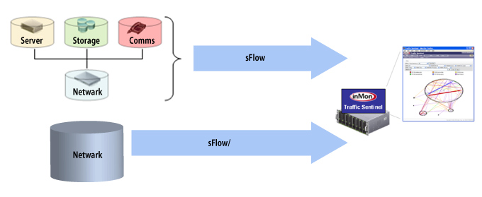
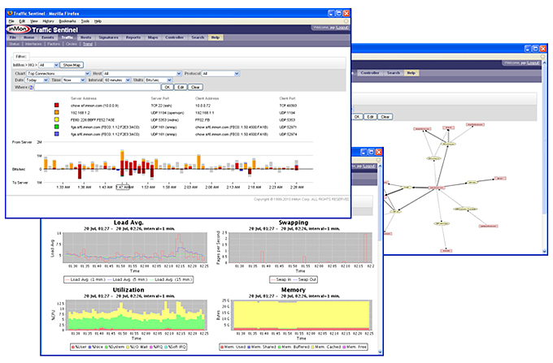

ネットワークトラフィック解析ソフトウェア inMon
ネットワーク管理者必見、ネットワークトラフィック解析ソフトinMonは
1G/10Gの高速ネットワークをプロトコルレベルでリアルタイムに解析できます。
inMon sFlow Trend-Pro
中・小規模ネットワーク・サーバ用「sFlow」マネージャ

主な機能
inMon sFlow Trend-Proの直観的なドリルダウン·インタフェースで詳細データの調査が簡単に行えます。全体のリアルタイムの状態が一目で判り、閾値を超えた際は警告をクリックすれば追加情報が表示され問題の所在が明かされます。
トラフィックフローとサーバパフォーマンスの詳細な履歴情報は、標準レポートもしくはカストマイズ可能な自動レポート機能によりアクセスされます。
inMon sFlow Trend-Proはスイッチ、ルータ、そしてサーバに組み込まれた機構を利用しています。画期的な技術であるsFlow（sFlow対応機器参照）のフロー情報をもサポートしております。ネットワーク全体の詳細情報が効率的に提供されます。
- ネットワーク全体の閾値および警告
- リアルタイムトップnの可視化
- ホストロケーション
- 自動L2, L3トポロジー検知とマッピング
- アプリケーション依存マッピング
- 詳細な履歴データの保持
- カスタマイズ可能な対話型のスケジュールされたレポート作成
- 数万のスイッチポートとサーバの常時監視
- 任意のWebブラウザやWeb対応アプリケーションからのパフォーマンスデータへのアクセス
- オープンインタフェースとWebベースのクエリを介して他のアプリケーションとの容易な統合

統合化ネットワークの可視性と制御
ITインフラストラクチャの統合化と仮想化はさらなる柔軟性と低コストを約束します。しかしながら統合化の恩恵を十分に実現するには、解決すべき課題が有ります。
統合化されたITインフラの柔軟性と効率性は共有ネットワーク構成の利用に基づいています。統合化環境における管理の難しさは共有ネットワーク構成パフォーマンスの問題を引き起こす点にあります。例えばサーバ仮想化は仮想マシンを簡単に再配置する柔軟性を提供します。しかしながらサーバグループによる仮想マシンの移動処理はネットワークのトラフィックパターンを大幅な変更を加えることになりパフォーマンス低下を招きます。同様にストレージトラフィックをネットワークに移動することは必要な帯域を劇的に増加させ、ストレージ担当部署による変更に対してネットワークを脆弱なものにします。共有リソースが混雑すると依存する全てのサービスが影響を受ける事になります。管理ツールが統合化されたインフラの全要素に対する可視化を提供するように適切に置かれる事が決定的に重要になってまいります。
inMon sFlow Trend-Proは統合化の難題に対応するために特に設計された新しいクラスのパフォーマンス管理ツールです。 inMon sFlow Trend-ProはマルチベンダーsFlow標準を利用し、ネットワーク全域を通して拡張性の高いリアルタイムの可視 性を提供し、統合化したインフラにおいて最適なサービスの提供をするために必要とされるネットワーク、ストレージ、サーバ及び通信パフォーマンスの統合化されたイメージを提供しています。
- ネットワーク、サーバ、ストレージ及び通信パフォーマンスの単一画面で管理
- ネットワーク、コンピューティング及びストレージのホットスポットの検知
- スケールアウト型ストレージ、スイッチクラスターのパフォーマンス監視
- ネットワーク、サーバ、アプリケーションの依存性の追跡
- 混雑を除去してサービスの質を保障
- 使用率の低いリソースを検知して効率を改善
sFlow Trend-Proの核心は、何千何万のスイッチ／ルータポートや、それ等に接続された物理的及び仮想的システムを絶え間なく監視する事が可能な高度に拡張性のあるエンジンである事です。洗練された統計アルゴリズムがネットワークとパフォーマンスデータを統合化し、統合化されたITインフラのパフォーマンスの正確で詳細なリアルタイムイメージを構築します

統合化とデータセンター
高速イーサネット·ファブリックを利用し、ストレージとコンピュテーションの柔軟性のあるプールを接続する事で、統合化はデータセンターを簡素化します。共有イーサネット·ファブリックはパフォーマンス監視の鍵で、ファブリック全域の全ての活動のリアルタイムな可視化を提供します。inMon sFlow Trend-Proはデータセンターのパフォーマンスをリアルタイムで履歴的なイメージを作成します。
物理的及び仮想的スイッチやサーバを含むデータセンターの全コンポーネントのパフォーマンスをsFlowを用いて監視することが出来るようになりました。inMon sFlow Trend-Proは拡張sFlowホスト監視機能を完全にサポートしていて、データセンター全域に渡るコンピュート、ストレージ、ネットワークの動作状態のリアルタイム可視化が可能になっています。
※標準のsFlowは物理的及びバーチャルサーバパフォーマンスメトリックスを含むように最近拡張されました
キャンパス環境の統合化
統合化はデータセンターに止まらず、VoIP (Voice over IP)、リアルタイム・ストリーミングメディアや仮想デスクトップが従来型のITトラフィックでネットワーク共有している企業キャンパスにも及びます。ここでもinMon sFlow Trend-Proはキャンパスのスイッチに組み込まれた機能を使用し、基幹サービスが中断される事が無いよう、端末間のネットワークパフォーマンスの可視化を提供しています。
ネットワークとシステムサービスの使用に対する課金は付加価値サービスを提供する費用を回収するだけでなく適切な利用を促す効果的な手段にもなります。